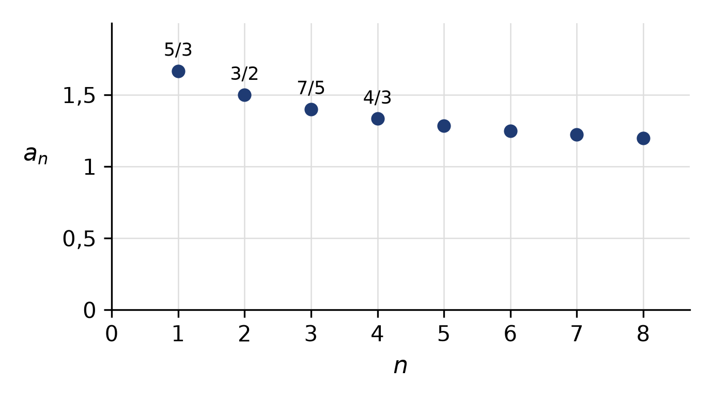

La finalul fișei vei ști să:
- recunoști un șir și îi calculezi termenii;
- treci de la un mod de definire a unui șir la altul;
- lucrezi cu șirul sumelor parțiale;
- afli termenul general pentru recurențe de forma $x_n=x_{n-1}+f(n)$ și $x_n=x_{n-1}\cdot f(n)$;
- stabilești monotonia unui șir cu diferența, cu raportul sau prin inducție.
1. Ce este un șir
Definiție
Un șir de numere reale este o funcție $f:\mathbb{N}^*\to \mathbb{R}$. Notăm $a_n=f(n)$.
- $n$ este rangul (indicele) termenului.
- $a_n$ este termenul de rang $n$, numit și termenul general.
- Scriem șirul $(a_n)_{n\ge 1}$ sau, pe scurt, $a_1;\ a_2;\ a_3;\ \ldots$
Rangul $n$ este întotdeauna un număr natural. Termenul $a_n$ poate fi orice număr real.
Uneori numerotarea începe de la $0$: scriem atunci $(a_n)_{n\ge 0}$.
Atenție! Ordinea termenilor contează. Șirurile $1;\ 2;\ 3;\ 4;\ \ldots$ și $2;\ 1;\ 4;\ 3;\ \ldots$ sunt diferite.
2. Moduri de definire a unui șir
Același șir poate fi dat în mai multe feluri. Iată șirul $3;\ 9;\ 19;\ 33;\ 51;\ \ldots$ scris în cinci moduri:
| Modul | Cum arată | La ce e bun |
|---|---|---|
| În cuvinte (descriptiv) | „fiecare termen este cu 1 mai mare decât dublul pătratului rangului său” | spune regula pe înțeles |
| Prin enumerarea primilor termeni | $3;\ 9;\ 19;\ 33;\ 51;\ \ldots$ | arată cum „începe” șirul |
| Prin formula termenului general | $a_n=2n^2+1$, $n\ge 1$ | calculăm direct orice termen: $a_{10}=201$ |
| Printr-o relație de recurență | $a_1=3$, $a_n=a_{n-1}+4n-2$, $n\ge 2$ | fiecare termen se obține din cel dinainte |
| Prin tabel sau grafic | punctele $(1;3)$, $(2;9)$, $(3;19)$, … | vedem cum variază șirul |
De reținut
- La o relație de recurență trebuie dat și primul termen. Fără el, șirul nu este bine definit.
- Graficul unui șir este format din puncte izolate $(n;\ a_n)$. Nu le unim cu o linie.
- Câțiva termeni nu determină singuri șirul. Din enumerare găsim o formulă posibilă, pe care o verificăm pe termenii dați.
Exemplul 1
Fie șirul $(a_n)_{n\ge 1}$, $a_n=\frac{n+4}{n+2}$.
a) Primii patru termeni: $a_1=\frac{5}{3}$, $a_2=\frac{6}{4}=\frac{3}{2}$, $a_3=\frac{7}{5}$, $a_4=\frac{8}{6}=\frac{4}{3}$.
b) Este $\frac{13}{12}$ termen al șirului? Rezolvăm $\frac{n+4}{n+2}=\frac{13}{12}$: $12n+48=13n+26$, deci $n=22$. Da, $\frac{13}{12}=a_{22}$.
c) Graficul: punctele $(n;\ a_n)$ pentru $n=1;\ 2;\ \ldots;\ 8$.

3. Șirul sumelor parțiale
Definiție
Pentru un șir $(a_n)_{n\ge 1}$ notăm
$$S_n=a_1+a_2+\ldots+a_n=\sum_{k=1}^{n}{a_k}.$$
Șirul $(S_n)_{n\ge 1}$ se numește șirul sumelor parțiale.
- $S_1=a_1$ și $S_n=S_{n-1}+a_n$, pentru $n\ge 2$.
- Invers, dacă știm $S_n$: $a_1=S_1$ și $a_n=S_n-S_{n-1}$, pentru $n\ge 2$.
Atenție! Formula $a_n=S_n-S_{n-1}$ nu se aplică pentru $n=1$. Verificăm separat dacă formula găsită dă și termenul $a_1$.
Exemplul 2
Suma primilor $n$ termeni ai unui șir este $S_n=n^2+3n$. Aflăm $a_n$.
- $a_1=S_1=1+3=4$.
- Pentru $n\ge 2$: $a_n=S_n-S_{n-1}=n^2+3n-(n-1)^2-3(n-1)=2n+2$.
- Pentru $n=1$, formula dă $2\cdot 1+2=4=a_1$. Deci $a_n=2n+2$ pentru orice $n\ge 1$.
4. Termenul general din relații de recurență
4.1. Recurențe de forma $x_n=x_{n-1}+f(n)$
★ Metodă
Adunăm relațiile
- Scriem relația pentru $n=2;\ 3;\ \ldots;\ n$: $x_2=x_1+f(2)$, $x_3=x_2+f(3)$, …, $x_n=x_{n-1}+f(n)$.
- Adunăm relațiile membru cu membru. Termenii $x_2;\ x_3;\ \ldots;\ x_{n-1}$ apar în ambii membri și se reduc.
- Rămâne $x_n=x_1+f(2)+f(3)+\ldots+f(n)$. Calculăm suma cu sumele cunoscute.
- Verificăm formula pe $x_1$ și $x_2$.
Exemplul 3
$x_1=1$ și $x_n=x_{n-1}+6n-5$, pentru $n\ge 2$.
Adunând relațiile: $x_n=1+\sum_{k=2}^{n}{(6k-5)}$. Pentru $k=1$, termenul $6k-5$ este tocmai $1=x_1$, deci
$$x_n=\sum_{k=1}^{n}{(6k-5)}=6\cdot \frac{n(n+1)}{2}-5n=3n^2-2n.$$
Verificare: $x_1=3-2=1$ și $x_2=1+7=8=12-4$. ✓
4.2. Recurențe de forma $x_n=x_{n-1}\cdot f(n)$
★ Metodă
Înmulțim relațiile
- Scriem relația pentru $n=2;\ 3;\ \ldots;\ n$: $x_2=x_1\cdot f(2)$, $x_3=x_2\cdot f(3)$, …, $x_n=x_{n-1}\cdot f(n)$.
- Înmulțim relațiile membru cu membru. Simplificăm cu $x_2;\ x_3;\ \ldots;\ x_{n-1}$ (sunt nenuli).
- Rămâne $x_n=x_1\cdot f(2)\cdot f(3)\cdot \ldots\cdot f(n)$. Fracțiile se simplifică „în lanț”.
- Verificăm formula pe $x_1$ și $x_2$.
Exemplul 4
$x_1=1$ și $x_n=\frac{2n}{n+1}\cdot x_{n-1}$, pentru $n\ge 2$.
$$x_n=1\cdot \frac{2\cdot 2}{3}\cdot \frac{2\cdot 3}{4}\cdot \frac{2\cdot 4}{5}\cdot \ldots\cdot \frac{2\cdot n}{n+1}.$$
Factorul $2$ apare de $n-1$ ori. Fracțiile $\frac{2}{3}\cdot \frac{3}{4}\cdot \ldots\cdot \frac{n}{n+1}$ se simplifică „în lanț” și rămâne $\frac{2}{n+1}$. Deci
$$x_n=2^{n-1}\cdot \frac{2}{n+1}=\frac{2^n}{n+1}.$$
Verificare: $x_1=\frac{2}{2}=1$ și $x_2=\frac{4}{3}\cdot 1=\frac{2^2}{3}$. ✓
5. Monotonia unui șir
Definiție
Șirul $(a_n)_{n\ge 1}$ este:
- strict crescător, dacă $a_n<a_{n+1}$ pentru orice $n\ge 1$;
- crescător, dacă $a_n\le a_{n+1}$ pentru orice $n\ge 1$;
- strict descrescător, dacă $a_n>a_{n+1}$ pentru orice $n\ge 1$;
- descrescător, dacă $a_n\ge a_{n+1}$ pentru orice $n\ge 1$.
Un șir crescător sau descrescător se numește monoton.
Este monotonia funcției $f:\mathbb{N}^*\to \mathbb{R}$, $f(n)=a_n$. La șiruri este suficient să comparăm doi termeni consecutivi.
Un șir este nemonoton dacă găsim trei termeni care „urcă și apoi coboară” (sau invers). De exemplu, $a_1<a_2$ și $a_2>a_3$.
De reținut · Trei metode
1. Diferența. Calculăm $a_{n+1}-a_n$, o aducem la o formă simplă și îi studiem semnul. Dacă $a_{n+1}-a_n>0$ pentru orice $n$, șirul este strict crescător. Dacă $a_{n+1}-a_n<0$ pentru orice $n$, șirul este strict descrescător.
2. Raportul. Se folosește numai dacă toți termenii sunt strict pozitivi. Comparăm $\frac{a_{n+1}}{a_n}$ cu $1$. Dacă raportul este mai mare decât $1$, șirul este strict crescător. Dacă este mai mic decât $1$, șirul este strict descrescător. Metoda e potrivită când $a_n$ conține puteri sau produse.
3. Inducția. Se folosește când șirul este dat prin recurență $x_{n+1}=g(x_n)$. Verificăm $x_1<x_2$ (sau $x_1>x_2$). Arătăm că din $x_k<x_{k+1}$ rezultă $x_{k+1}<x_{k+2}$.
Exemplul 5
a) Diferența. $a_n=\frac{4n+1}{n+2}$.
$$a_{n+1}-a_n=\frac{4n+5}{n+3}-\frac{4n+1}{n+2}=\frac{(4n+5)(n+2)-(4n+1)(n+3)}{(n+2)(n+3)}=\frac{7}{(n+2)(n+3)}>0.$$
Șirul este strict crescător.
b) Raportul. Șirul din Exemplul 4: $x_n=\frac{2^n}{n+1}$. Toți termenii sunt strict pozitivi.
$$\frac{x_{n+1}}{x_n}=\frac{2^{n+1}}{n+2}\cdot \frac{n+1}{2^n}=\frac{2n+2}{n+2}>1,$$
pentru că $2n+2>n+2$ pentru orice $n\ge 1$. Șirul este strict crescător.
c) Inducția. $x_1=1$ și $x_{n+1}=\frac{x_n+6}{3}$, pentru $n\ge 1$. Arătăm că $x_n<x_{n+1}$ pentru orice $n\ge 1$.
- Verificare: $x_2=\frac{7}{3}>1=x_1$.
- Pasul de inducție: presupunem $x_k<x_{k+1}$. Atunci $x_k+6<x_{k+1}+6$, deci $\frac{x_k+6}{3}<\frac{x_{k+1}+6}{3}$, adică $x_{k+1}<x_{k+2}$.
Conform principiului inducției matematice, șirul este strict crescător.
Exerciții
Nivel de bază
-
Se consideră șirul $(a_n)_{n\ge 1}$, $a_n=\frac{2n-1}{n+2}$.
a) Calculați $a_1$, $a_2$, $a_3$ și $a_4$.
b) Arătați că $\frac{13}{9}$ este termen al șirului și aflați-i rangul.
c) Este numărul $2$ termen al șirului? Justificați.
-
Scrieți primii cinci termeni ai fiecărui șir:
a) șirul numerelor prime, în ordine crescătoare;
b) șirul pătratelor perfecte nenule, în ordine crescătoare;
c) șirul $(r_n)_{n\ge 1}$, unde $r_n$ este restul împărțirii lui $n$ la $3$.
-
Găsiți o formulă posibilă pentru termenul general, $n\ge 1$:
a) $3;\ 5;\ 7;\ 9;\ \ldots$
b) $\frac{1}{2};\ \frac{2}{3};\ \frac{3}{4};\ \frac{4}{5};\ \ldots$
c) $-1;\ 1;\ -1;\ 1;\ \ldots$
d) $0;\ 3;\ 8;\ 15;\ 24;\ \ldots$
e) $\frac{1}{3};\ \frac{1}{9};\ \frac{1}{27};\ \frac{1}{81};\ \ldots$
-
Relații de recurență.
a) Șirul $(x_n)_{n\ge 1}$ are $x_1=2$ și $x_{n+1}=2x_n-1$, pentru $n\ge 1$. Calculați $x_2$, $x_3$, $x_4$ și $x_5$.
b) Primii termeni ai unui șir sunt $1;\ 4;\ 13;\ 40;\ 121$. Găsiți o relație de recurență de forma $x_{n+1}=a\cdot x_n+b$ care îi generează.
Indicație: comparați fiecare termen cu triplul celui dinainte.
-
Fie șirul $a_n=(-1)^n\cdot (2n-1)$, $n\ge 1$. Scrieți primii cinci termeni, apoi calculați $S_1$, $S_2$, $S_3$, $S_4$ și $S_5$.
-
Studiați monotonia șirurilor folosind diferența:
a) $a_n=5-\frac{2}{n}$;
b) $b_n=\frac{n+4}{n+1}$.
Nivel consolidat
-
Aflați termenul general $a_n$ al șirului pentru care suma primilor $n$ termeni este:
a) $S_n=3n^2-n$;
b) $S_n=n^2+n+1$.
Indicație: la b) comparați formula obținută pentru $n\ge 2$ cu $a_1$.
-
Aflați termenul general al șirului:
a) $x_1=2$, $x_n=x_{n-1}+6n-2$, pentru $n\ge 2$;
b) $x_1=4$, $x_n=x_{n-1}+3n^2+1$, pentru $n\ge 2$.
Indicație: folosiți sumele $\sum_{k=1}^{n}{k}$ și $\sum_{k=1}^{n}{k^2}$.
-
Aflați termenul general al șirului:
a) $x_1=1$, $x_n=\frac{n+2}{n-1}\cdot x_{n-1}$, pentru $n\ge 2$;
b) $x_1=4$, $x_n=\frac{n-1}{n+1}\cdot x_{n-1}$, pentru $n\ge 2$.
-
Studiați monotonia șirurilor folosind raportul:
a) $a_n=\frac{n}{3^n}$;
b) $b_n=\frac{2\cdot 5\cdot 8\cdot \ldots\cdot (3n-1)}{3\cdot 6\cdot 9\cdot \ldots\cdot (3n)}$.
-
Un videoclip are $10$ vizualizări în prima zi după postare. În fiecare zi următoare, numărul vizualizărilor din ziua $n$ este cu $2n$ mai mare decât în ziua precedentă.
a) Notați cu $x_n$ numărul vizualizărilor din ziua $n$. Scrieți relația de recurență.
b) Aflați termenul general $x_n$. Câte vizualizări are videoclipul în ziua a $10$-a?
c) Câte vizualizări are videoclipul, în total, în primele $10$ zile?
-
Șirul $(x_n)_{n\ge 1}$ are $x_1=5$ și $x_{n+1}=\frac{x_n+3}{4}$, pentru $n\ge 1$. Arătați prin inducție că șirul este strict descrescător.
Nivel avansat
-
Șirul $(x_n)_{n\ge 1}$ are $x_1=1$ și $x_n=\frac{n(n+1)}{(n-1)(n+2)}\cdot x_{n-1}$, pentru $n\ge 2$.
a) Aflați termenul general.
b) Studiați monotonia șirului.
Indicație: despărțiți produsul în două „lanțuri”: $\frac{2}{1}\cdot \frac{3}{2}\cdot \ldots\cdot \frac{n}{n-1}$ și $\frac{3}{4}\cdot \frac{4}{5}\cdot \ldots\cdot \frac{n+1}{n+2}$.
-
Fie șirul $a_n=\frac{n^2}{2^n}$, $n\ge 1$.
a) Arătați că $\frac{a_{n+1}}{a_n}<1$ dacă și numai dacă $n^2-2n-1>0$.
b) Calculați $a_1$, $a_2$, $a_3$, $a_4$. Este șirul monoton? Începând de la ce rang termenii scad?
-
Șirul $(x_n)_{n\ge 1}$ are $x_1=1$ și $x_{n+1}=\sqrt{x_n+2}$, pentru $n\ge 1$.
a) Arătați prin inducție că $x_n<2$ pentru orice $n\ge 1$.
b) Arătați prin inducție că șirul este strict crescător.
-
Revenim la șirul de la exercițiul 4 a): $x_1=2$, $x_{n+1}=2x_n-1$.
a) Comparați termenii $x_1;\ \ldots;\ x_5$ cu puterile lui $2$. Intuiți o formulă pentru $x_n$.
b) Demonstrați formula prin inducție matematică.
Pentru cei care vor mai mult
-
Determinați numerele reale $m$ pentru care șirul $a_n=\frac{n+m}{2^n}$, $n\ge 1$, este strict descrescător. Ce se întâmplă pentru $m=0$?
Indicație: folosiți diferența. De ce nu putem folosi raportul pentru orice $m$?